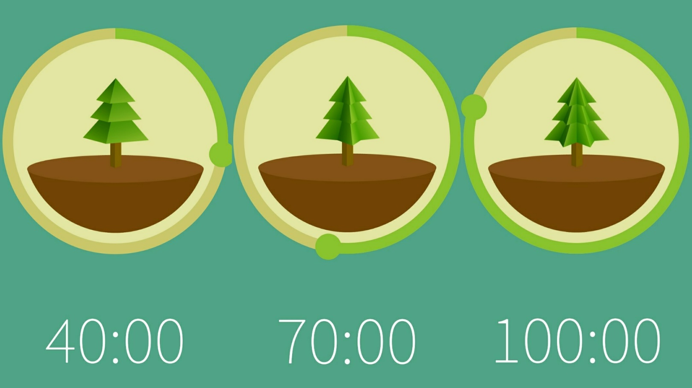
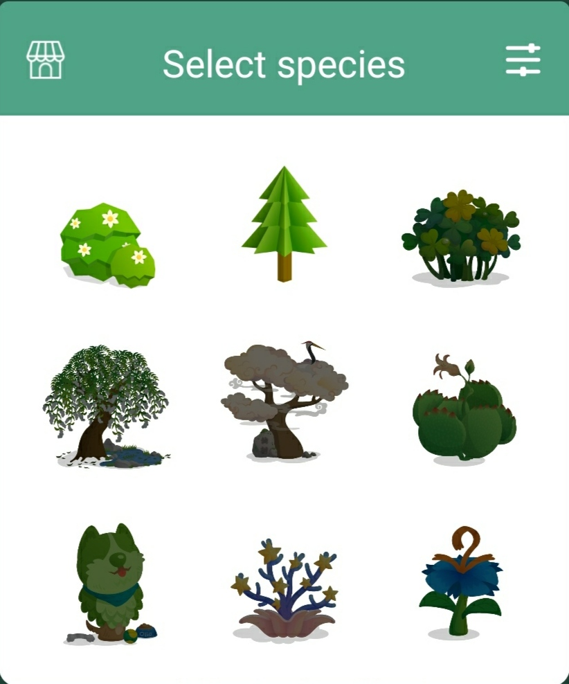

Forest软件最基本的功能就是种树，打开应用即可看到并使用该功能。
单人种植
Forest在中心放置一个圆形图标，内置一个可以选择的种植树木的图片，在圆形的圆环上有一个可以拖动的按钮，通过顺时针拖动按钮在圆上的位置，便可以设置所需要的种植树木时间。最低可设置时间为10分钟，最高可设置时间为120分钟。
其中，在拖动按钮的过程中，圆中心的植物会随设置的时间慢慢变成大树，如下图所示：

当然在不同的时间段内的植物也是可选择的，只需点击中间的植物图即可选择不同的植物（前提是你需要解锁）。

种植的规则如下：在种植的过程中，如果在没开启手机工作模式的情况下，离开了界面几秒后，会直接导致树木的枯死；而在开启的情况下，则不会，但在最后的种植金币收益上会减半。
多人种植
多人种植是Forest的一大亮点，可以跟自己的小伙伴们一起种植树木。其中的时间设置与单人的没什么区别，只是在多人种植的界面与单人种植的界面有些差异，在多人中增加了“建立房间”“加入房间”的功能按钮，分别是创建房间的密钥和输入房间的密钥。
需要注意的是：种植过程中，如果有一方的种植者离开了种植界面或者中途退出，则所有人的种植失败。
此外，Forest功能还包括种植真树、查看种树情况、时间历程及标签、好友功能等。